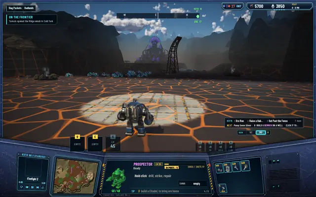
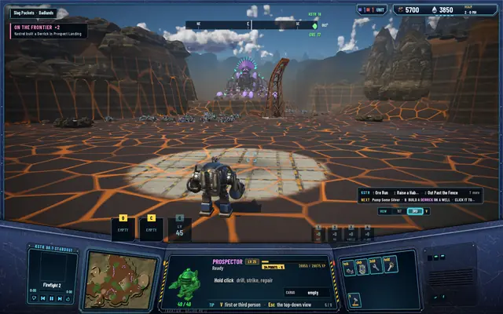
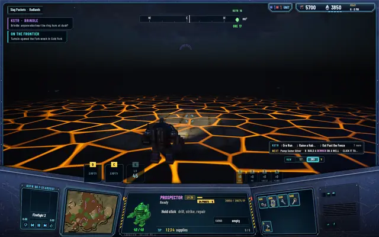
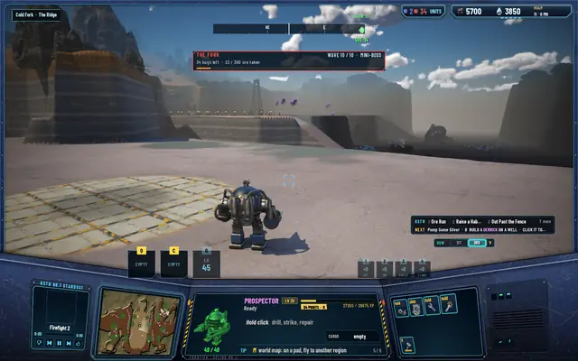
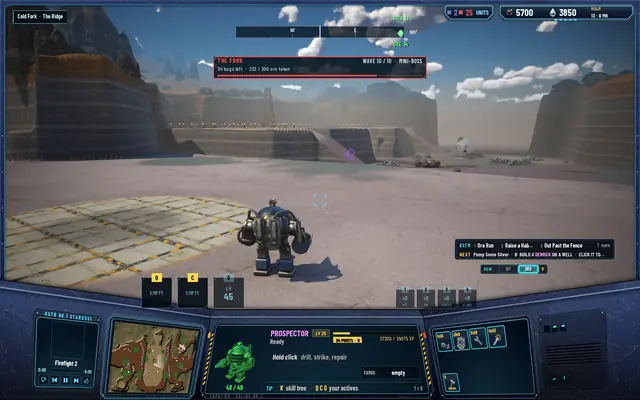

By day you see the whole region
The regions aren't that big, so by day there's no fog: every unit, bug and building in yours is sent to you and drawn. Through dusk the sight closes in to the night's, round your headlamp, and opens again at dawn. This closes milestone 8.

My remark was short: by day the line of sight should be the whole region, since the zones are small. Until now a pilot saw what the fog of war allowed, by night and by day alike, and the server sent only that. That kept a hacked client from revealing anything, and it stays that way: nothing hidden by the fog ever leaves the server. What changed is what the fog allows by day.
Day, dusk, night
By day a pilot sees all of its region, every level of it, so every unit, bug and building in it is sent, the far ones in fewer snapshots than the near ones. Through dusk the sight closes in round the driven unit to the night's: half its day reach plus the headlamp's wedge, easing down by the same share at each step of the lamps' dark, over about one game hour, which is about 100 real seconds. Night is unchanged. Neighbouring regions are as before.
Measured in Prospect Landing at dusk, the half-cells a pilot sees: 55,296 at 18.0 h, 22,256 at 18.3, 5,356 at 18.5 and 618 at 19.0.
One rule followed from it. A bug that has eaten its fill and is leaving used to vanish once it was out of the pilot's interest. Now it vanishes only out of real sight or at the region's edge, so by day you watch a Lodeback carry your ore all the way home.
What it costs
The worry was bytes and frame time, so both were measured, at the two busiest places in the world.
| Scene at noon | Units told before | Now | Bytes a second to the client |
|---|---|---|---|
| The nest in Slag Pockets | 2 of 29 | 29 of 29 | 2,022 → 3,730 |
| The Fork, wave 10 out | 1 of 35 | 35 of 35 | 2,090 → 4,103 |
The server's world tick stays at 0.25 ms at the 99th percentile. In the game the frame is 12.2 to 12.7 ms median with or without the daylight sight, and the GPU 11.7 to 12.2 ms, so the extra units drawn cost nothing you'd notice.
In pictures

Noon, before and after: the whole horde at the nest, 27 enemies counted.
Before: the same spot, one enemy told.
Night is unchanged: the headlamp and the lava.
The Fork at noon with wave 10 out: all 34 bugs told.
Before: the panel counts 34, the eye sees one.


The pictures also fixed a testing annoyance: the Brood and Matriarch shot sets had been failing their checks because the night's six-cell sight hid the scenes they were checking. They hold noon now.
Every test suite passes: 496 core, 279 server and 91 network.